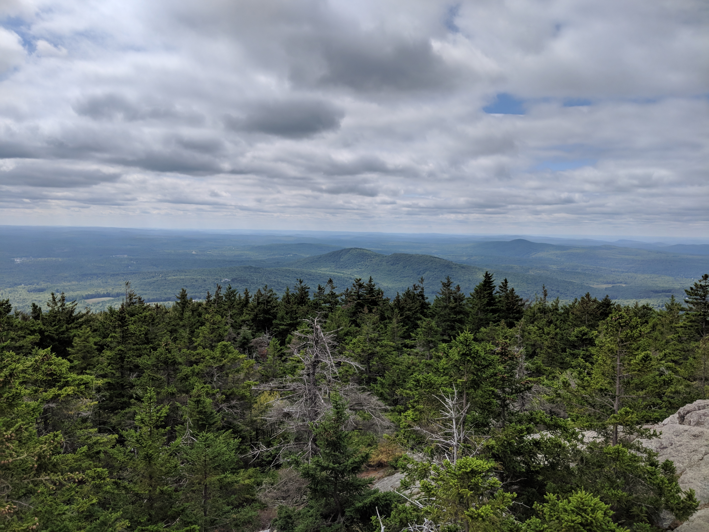
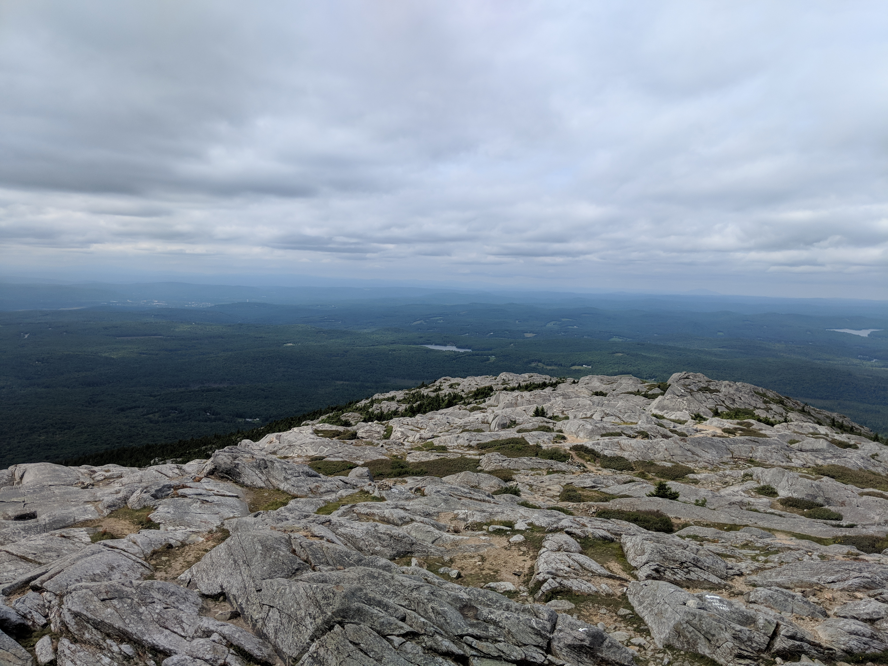

Distance
Distance Elevation
Elevation Observed Wildlife
Observed WildlifeThis hike is a must for anyone looking to summit a mountain in New England. There are multiple routes to the top. The White Dot and White Cross can get quite crowded. The bald summit provides excellent views and it is so cool to be high above any peak around. Plan thoughtfully, nice weekends in the summer, spring, and fall can get very crowded. If you can handle this hike, you should feel confident tackling a four thousand footer in the whites.


